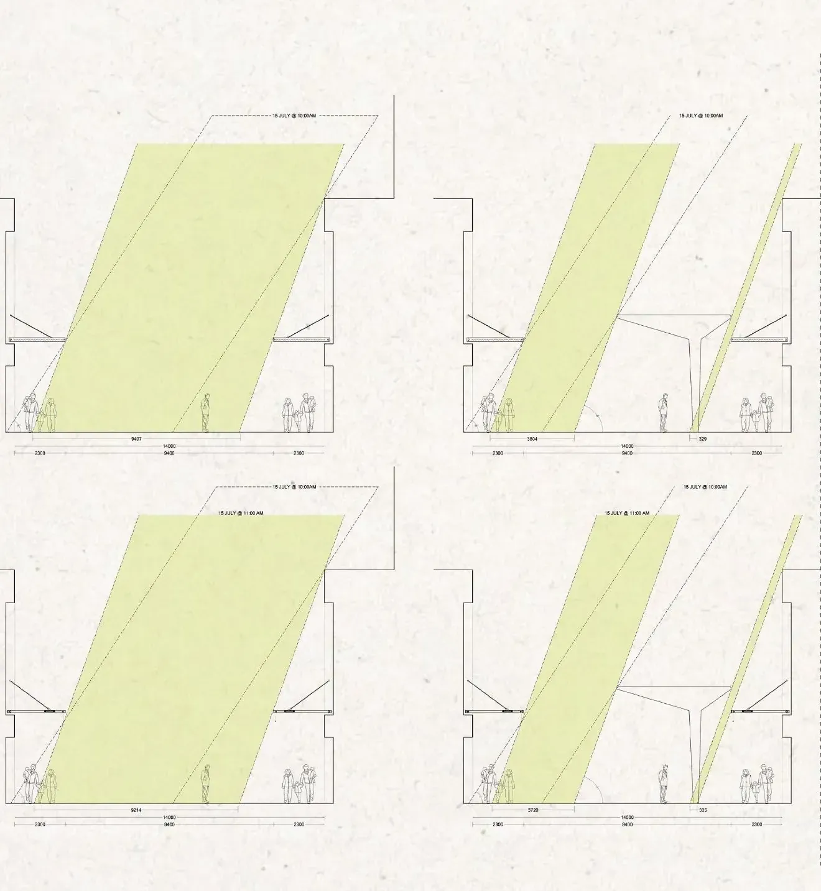
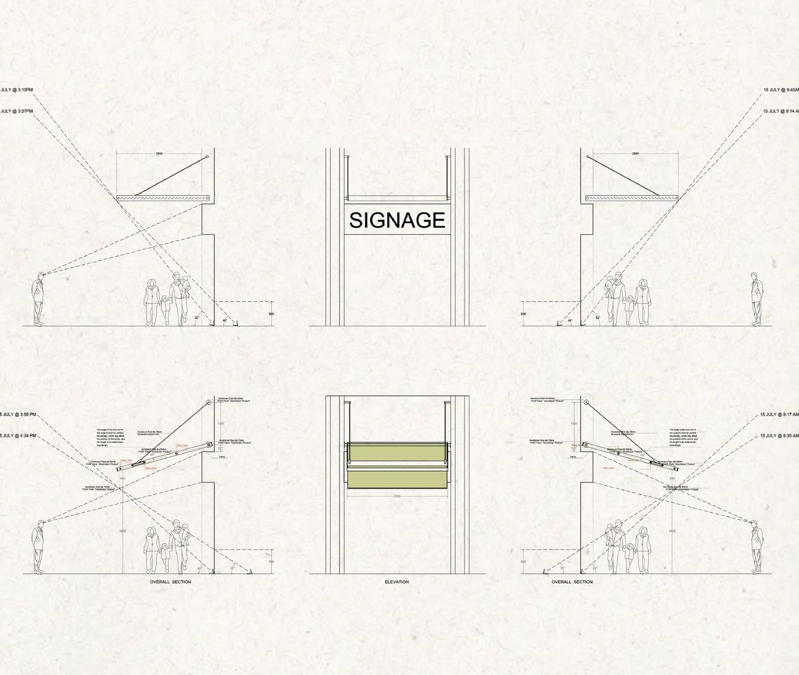
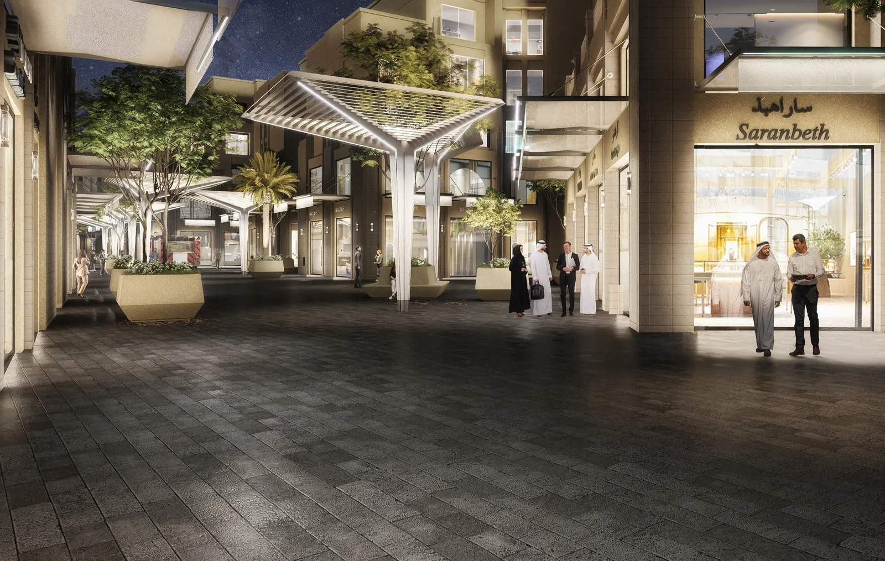

The project involved the redevelopment of the existing Gold Souq area while preserving and integrating the existing landscape. The primary objective was to enhance pedestrian comfort and provide relief from the harsh summer climate.
To achieve this, shading structures were introduced as extensions of the existing shopfronts, complemented by pergola elements along pedestrian pathways. Strategic landscaping and planter features were incorporated to improve the visual appeal and create a more inviting public realm.
Scope of Work
Landscape layout development
Shading proposal study
Presentation development
Detail design development
Drawings
Shading Proposal Study

Shading Proposal Study — Sun-Path Sections

Canopy Section Details & Signage System
Visualisation
Renders

Pedestrian Street — Pergolas & Planter BenchesIlluminated Shopfront Canopies